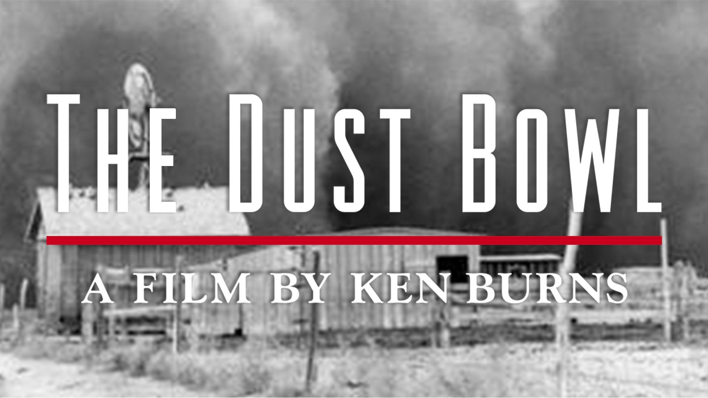

Section 3: Current Challenges in American Environmentalism
3.2 Capitalism: The “Need” for Growth Versus an Exhaustible Environment
Justin Leinaweaver (Fall 2026)

Chapter 3
Chapter 5
Chapter 14
Therefore, capitalism caused the Dust Bowl
Chapter 3 (p44-63)
What is the premise in this chapter?
What key evidence is provided?
Capitalism weakens our national identity
Capitalism implies individuality (e.g. bad times are your fault and your problem)
Capitalism causes economic stresses which minimizes human empathy
Chapter 5 (p80-98)
What is the premise in this chapter?
What key evidence is provided?
American culture defined by capitalistic ethos.
Capitalism attaches us to cash, not the earth.
Capitalism teaches us our survival is separate from nature’s survival (autonomy and indifference).
Capitalism views all resources commercially and imperially.
Chapter 14 (p210-230)
What is the premise in this chapter?
What key evidence is provided?
Capitalism shortens individual time horizons
Capitalism creates incentives to ignore science
BUT, government can pool resources to help us recover from catastrophes
BUT, government can pool resources to help us invest in science to prevent future catastrophes
American culture is capitalist
Capitalism replaces our national identity with one focused on being an isolated, economically stressed individual (consumer)
Capitalism teaches us that nature is a resource and our survival is separate from nature’s survival
Capitalism shortens time horizons and creates incentives to ignore science
Capitalism overpowered the government’s best intentions
Therefore, capitalism caused the Dust Bowl
Dauvergne’s (2016) Environmentalism of the Rich
Chapter 2
Chapter 3
Chapter 4
Submit reflections to Canvas